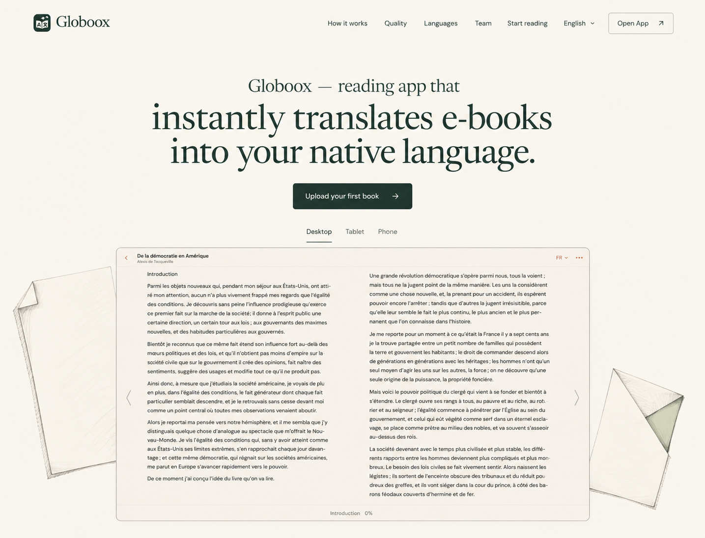
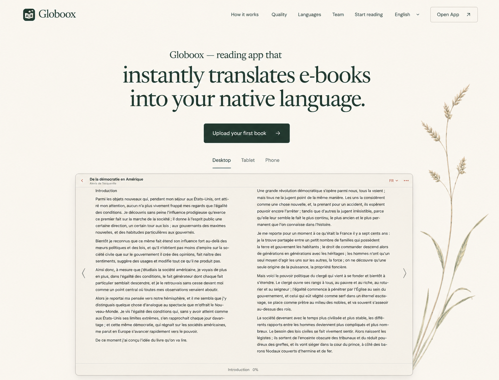

Globoox / Hero illustration studies / 7 September 2026
Transfer the drawing manner of Languages, with different subjects. Three independent built-in ImageGen results, in actual conversation display order. Root prefers 1 for refinement; no user selection or implementation. Original product media remains authoritative.
Full critique, prompts and provenance
Languages / Drawing manner
Style reference: quiet graphite contour, muted local color and open space. The tree subject is not being repeated.

Previous sentence hierarchy
Composition/type starting point; dense old botanical frame is superseded for this exploration.

1 / Ginkgo margin
Root preference for refinement. Smaller type, product priority, single quiet accent. Branch placement still needs work.

2 / Paper marginalia
Weaker: large stationery props and oversized headline.

3 / Meadow line
Alternate silhouette. Stem is much taller than intended and approaches the headline.
